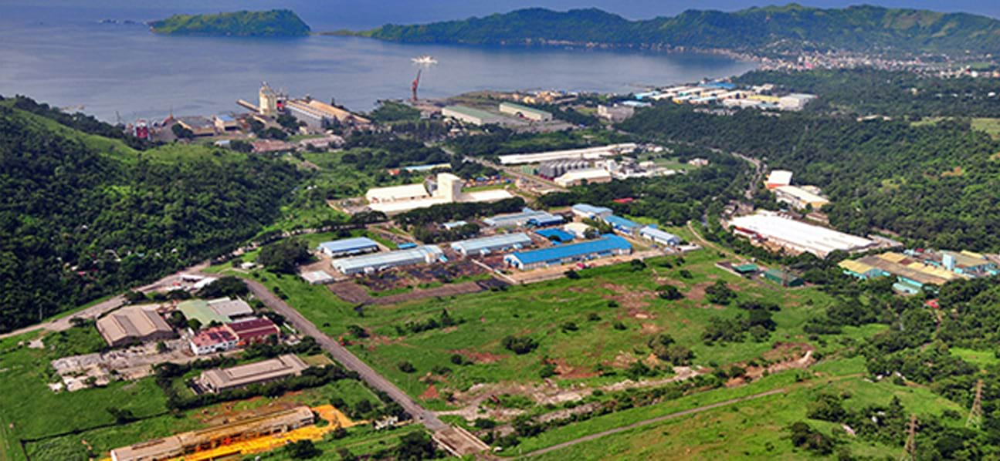
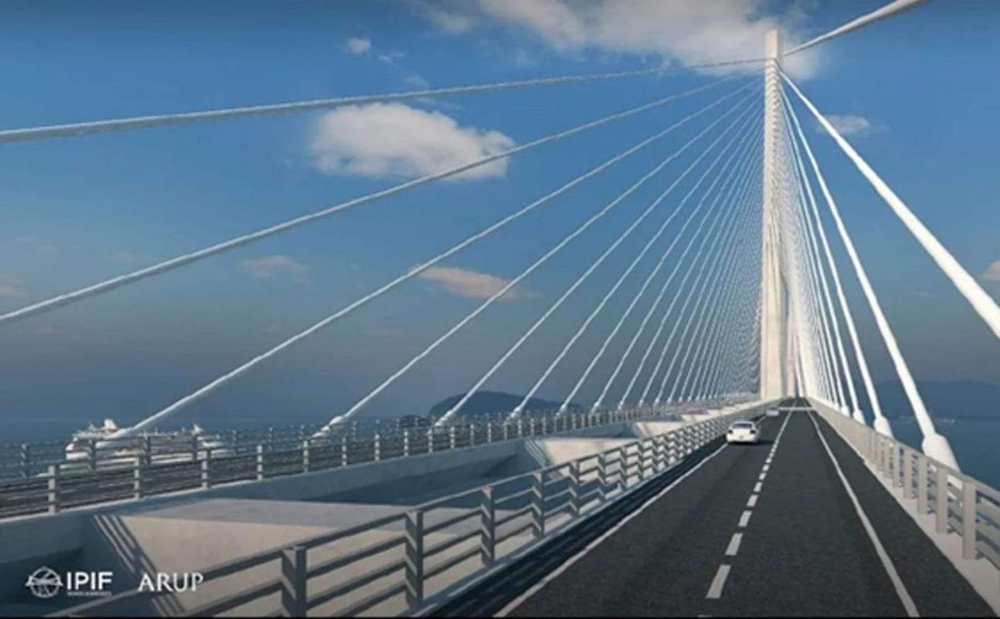
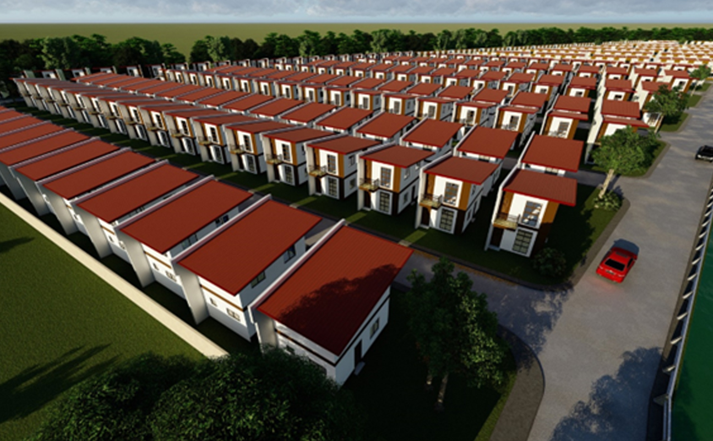

<section class="mt-[81px] py-20 bg-[#f7f7f7]">
    <div class="max-w-7xl mx-auto px-4">

        <!-- Section Header -->
        <div class="mb-12">
            <div class="max-w-5xl mx-auto flex items-start space-x-4">
                <div class="w-1 h-40 bg-green-500"></div>
                <div>
                    <h2 class="text-4xl font-bold text-gray-800">Unveiling Mariveles, Bataan: The Hidden Gem for Real
                        Estate Investment

                    </h2>
                    <p class="text-gray-600 text-base mt-1 max-w-2xl">
                        Mariveles Bataan stands as a beacon of rapid economic development, poised to redefine the
                        landscape of progress in the region. With strategic infrastructure projects, dynamic industrial
                        growth, and a commitment to innovation, Mariveles Bataan presents a compelling opportunity for
                        investors, businesses, and residents alike to thrive in a burgeoning economic hub.
                    </p>
                </div>
            </div>
        </div>

        <!-- Centered Photo -->
        <div class="flex justify-center my-12">
            
        </div>

        <!-- Author/Meta Info -->
        <div class="flex justify-center mb-8">
            <span class="text-sm text-gray-700">
                <span class="font-semibold">Author:</span> Nicole Dizon&nbsp;&nbsp;
                <span class="font-semibold">Category:</span> Mariveles Bataan&nbsp;&nbsp;
                <span class="font-semibold">Date:</span> <span>May 2024</span>
            </span>
        </div>

        <!-- Article Content -->
        <div class="max-w-3xl mx-auto text-gray-700 text-sm leading-relaxed px-4">
            <h3 class="text-lg font-semibold mb-4">Rapid Economic Development</h3>
            <p>
                At the heart of Mariveles Bataan lies a thriving industrial ecosystem that fuels economic expansion and
                job creation. The Mariveles Economic Zone (MEZ) serves as a catalyst for industrial innovation,
                attracting multinational corporations and manufacturing enterprises seeking a strategic foothold in the
                Philippines. With its strategic location, world-class infrastructure, and business-friendly environment,
                MEZ fosters innovation, collaboration, and sustainable growth, positioning Mariveles Bataan as a premier
                destination for industrial investment and economic opportunity.
            </p>
            <h3 class="text-lg font-semibold mb-4">Dynamic Industrial Growth</h3>
            <p class="mt-6">
                Mariveles Bataan embraces innovation as a driving force behind economic progress and competitiveness.
                From pioneering renewable energy projects to fostering research and development initiatives, Mariveles
                Bataan cultivates a culture of innovation that empowers businesses to thrive in a rapidly evolving
                global landscape. Through strategic partnerships, investment incentives, and infrastructure support,
                Mariveles Bataan nurtures a dynamic ecosystem of innovation and entrepreneurship that propels economic
                growth, fosters job creation, and enhances the quality of life for its residents.
            </p>
            <h3 class="text-lg font-semibold mb-4">Promising Appreciation</h3>
            <p class="mt-6">
                Investing and living in Mariveles Bataan is not just about owning a home; it's about securing a
                promising future. Being the Municipality in Bataan where the future exit of the Bataan-Cavite Bridge
                located ensures significant appreciation over time. As infrastructure developments continue to enhance
                connectivity and accessibility to key areas, property values within the subdivision are expected to
                soar, offering homeowners substantial returns on their investment.
            </p>
            <h3 class="text-lg font-semibold mb-4">Strategic Infrastructure Projects</h3>
            <p class="mt-6">
                As a symbol of progress and connectivity, the Bataan-Cavite Bridge embodies a commitment to building a
                sustainable future for generations to come. Through its innovative design, environmental safeguards, and
                community engagement initiatives, the bridge demonstrates a holistic approach to infrastructure
                development that balances economic growth with environmental stewardship and social responsibility. By
                embracing sustainability principles, the bridge ensures that its benefits are shared equitably, and its
                impact is felt positively by communities and ecosystems alike.
            </p>

            <!-- Centered Photo -->
            <div class="flex justify-center my-12">
                
            </div>

            <h3 class="text-lg font-semibold mb-4">Immersive Living Experience</h3>
            <p class="mt-6">
                Mariveles Bataan is not just a place to live; it's a lifestyle choice that embraces the beauty of nature
                and the vibrancy of community. Nestled amidst lush landscapes, pristine beaches, and breathtaking
                mountain views, Mariveles Bataan offers residents an immersive living experience that harmonizes modern
                amenities with the tranquility of nature. From recreational parks to cultural landmarks, Mariveles
                Bataan provides a rich tapestry of experiences that enrich the lives of its residents and foster a
                strong sense of community.
                Investing in Mariveles Bataan isn't just an investment in property; it's an investment in serenity,
                well-being, and future growth. With its strategic location, modern infrastructure, and untouched beauty
                of Bataan's natural landscape, Municipality of Mariveles offers the opportunity to live a life of
                fulfillment and prosperity. As Bataan continues to emerge as a premier destination for residential
                living, property values within Mariveles Bataan are poised for steady appreciation, ensuring long-term
                returns for discerning investors.
            </p>
            <h3 class="text-lg font-semibold mb-4">Residential Investment within your Budget</h3>
            <p class="mt-6">
                The great news about investing in Mariveles is the affordability compared to other areas of development.
                The best example would be the housing project by RCD Land which is RCD Royale Homes Mariveles. Sprawling
                over 10 hectares of land with plain terrain, RCD Royale Homes Bataan is a gated subdivision which offers
                613 units of quality and affordable homes in a peaceful and tranquil community. Homeownership is within
                reach for everyone. With a reservation fee of only P10,000.00, individuals can secure their desired
                property and embark on their journey towards owning a home in this thriving community. This affordable
                reservation fee makes homeownership accessible and hassle-free, allowing residents to take the first
                step towards realizing their dreams without breaking the bank.
            </p>

            <!-- Centered Photo -->
            <div class="flex justify-center my-12">
                
            </div>

            <h3 class="text-lg font-semibold mb-4">RCD Royale Homes Mariveles is Flood-Free Guarantee</h3>
            <p>
                Safety is a priority for our homeowners in RCD Royale Homes Mariveles, hence the subdivision boasts a
                flood-free guarantee. Situated in an elevated location and equipped with state-of-the-art drainage
                systems, the subdivision is designed to withstand heavy rains and potential flooding events, ensuring
                the safety and security of residents and their properties. With this assurance, homeowners can
                confidently invest in their dream homes without the fear of water-related risks.
            </p>

            <p class="mt-6">
                With the flood-free assurance and strategic location near the Bataan-Cavite Interlink Bridge, properties
                within the subdivision are poised for long-term appreciation, making them an ideal choice for homeowners
                and investors seeking both safety and potential returns
            </p>

            <p class="mt-6">
                For more information, you may visit rcdland.com or contact us at 0917 700 1109.
            </p>